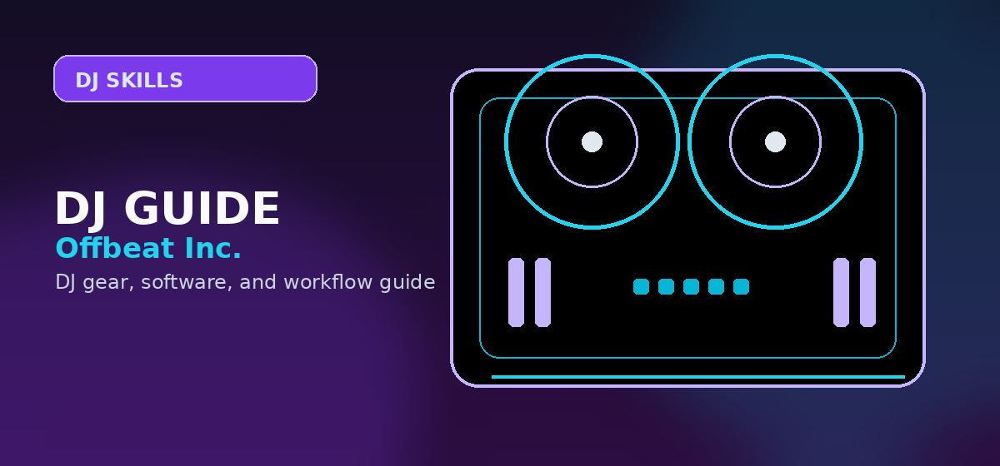

How to Beatmatch Manually Without Sync (Step-by-Step Guide)
Master manual beatmatching on DJ controllers and turntables — pitch adjustment, tempo matching, and timing correction without pressing Sync.

Disclosure: This page uses affiliate links. We may earn a commission at no extra cost to you. Full disclosure →
Perfect beatmatching is the skill that separates working DJs from bedroom hobbyists. It's not hard — but it does take deliberate practice over several weeks. Here's the exact method professionals use to train it.
Why Learn Manual Beatmatching?
Sync works. But relying on Sync creates a gap in your ear training that will surface at the worst moment — when Sync fails, when BPM detection is wrong on an unusual track, or when you switch to CDJs without a grid-corrected library. DJs who can beatmatch manually can recover from any error. DJs who can't are stuck.
Step 1: Match BPMs with the Pitch Fader
Play Track 1 in your master channel. Load Track 2 in your cue channel. Listen to Track 2 in your headphones — NOT through the speakers. Start Track 2 and use the pitch fader to slowly adjust its BPM until the tempo feels equal to Track 1. Most controllers show BPM in software — use that as a starting reference, then trust your ears over the numbers.
Step 2: Find the Downbeat
Most dance music has a 4/4 time signature with a strong kick drum on beat 1. Listen for it. Mark your cue point at beat 1 of the next phrase (usually every 16 or 32 bars). This is your drop-in point.
Step 3: Tap in the Track
Stop Track 2. On beat 1 of a phrase in Track 1, restart Track 2 from your cue point. Listen in headphones to both tracks simultaneously. At this stage they're probably slightly off — that's normal.
Step 4: Nudge to Correct Phase
If Track 2 is ahead of Track 1 (its downbeats land before Track 1's), lightly push the jog wheel forward to slow it down. If Track 2 is behind, pull the jog wheel back to speed it up. Make small corrections — never big jolts. The tracks will lock into phase after a few nudges.
Step 5: Blend and Crossfade
Once the beats are locked, bring up Track 2's EQ (boost its bass, cut Track 1's bass to avoid frequency clash), bring up the volume fader, and crossfade smoothly. The whole blend should take 16–32 bars.
Practice Routine (4 Weeks)
Week 1: BPM matching only (use pitch fader to match, count difference). Week 2: Add phase correction with jog nudging. Week 3: Time the restart to hit beat 1 cleanly without nudging. Week 4: Blend two tracks continuously for 20 minutes without Sync.
Bottom line: Learning to beatmatch by ear before relying on sync trains your ear and saves you when technology fails.
⚡ Check current prices and deals:
Beatmatching Methods Compared
| Method | Difficulty | Equipment Needed | Best For |
|---|---|---|---|
| Manual pitch adjustment | Hard | Turntables or CDJs | Vinyl/CDJ purists |
| Beat grid + sync | Easy | Any controller | Beginners |
| Ear training + nudge | Medium | Headphones + mixer | Club DJs |
| BPM tap tempo | Medium | Software BPM counter | Live energy matching |
Understanding Beatmatching: The Complete Technical Foundation
Manual beatmatching — matching the tempo and phase of two tracks using only your ears and the pitch fader — is the most fundamental technical skill in DJing. This guide explains why and how it works, and provides a structured practice framework.
The Physics of Beatmatching
Beatmatching involves two separate adjustments that are often confused:
- Tempo matching (BPM alignment) — adjusting the speed of the incoming track to match the playing track so that their beats hit at the same rate. If two tracks are at the same BPM, their beats will continue to stay aligned indefinitely once matched.
- Phase alignment (beat syncing) — moving the starting point of the incoming track so that its beats hit at the same time as the playing track. Even if BPMs are identical, the beats may be offset; phase alignment corrects this by nudging the jog wheel forward or back.
Good beatmatching practice separates these two adjustments. Most beginners try to fix both simultaneously with the pitch fader, which creates apparent "drifting" even when the BPMs are close to matching.
Step-by-Step Manual Beatmatching Process
- Start the incoming track at a recognisable marker — pause it at the first beat of a bar, or hot cue it to the first beat of the intro
- Listen to the playing track in your headphones only — tap your finger along to the beats and count 4-beat phrases
- Start the incoming track in sync with a phrase boundary — trigger it at a beat 1 (ideally the start of a 16 or 32-bar phrase) of the playing track
- Compare the two beats in split-cue mode — the beat should sound like a single unified kick; two separate kick sounds means they are out of phase
- Adjust pitch fader to match BPM — if the incoming track is rushing ahead, lower the pitch fader slightly; if falling behind, raise it. Make small adjustments.
- Correct phase drift without the pitch fader — if the beats are still offset, nudge the jog wheel forward to speed up briefly, or hold the jog platter lightly to slow down briefly, until the beats snap into alignment
- Confirm for 16-32 bars — listen for at least 30 seconds with both channels in the cue to confirm the BPMs are truly matched before bringing the incoming track into the mix
30-Day Practice Schedule
| Day Range | Focus | Session Goal |
|---|---|---|
| Days 1-5 | Ear training only | Tap BPM of 10 familiar tracks manually; compare with software BPM readout |
| Days 6-10 | Phrase recognition | Identify phrase boundaries in 5 tracks; count to 8-bar and 16-bar boundaries by ear |
| Days 11-15 | Pitch fader control | Set two tracks 5 BPM apart; bring them to match using only the pitch fader (no sync) |
| Days 16-20 | Phase correction only | Set tracks to identical BPM; practise phase alignment using only jog wheel nudges |
| Days 21-30 | Full mixed practice | Complete 30-minute sessions using only manual BPM matching; no sync button on any track |
Why Manual Beatmatching Still Matters in 2026
Sync buttons are ubiquitous in modern DJ software and controllers. Most professional working DJs use sync routinely. Manual beatmatching remains important because:
- Pioneer CDJ players in club booths may not have sync available if the DJ before you did not use the Pro DJ Link network setup
- Understanding the mechanics makes you a better troubleshooter — when sync fails or drifts, you understand why and how to correct it
- Playing vinyl requires manual beatmatching; understanding the skill is essential if you ever want to use turntables
- Developing the ear for pitch and tempo improves your overall musicality and musical instinct beyond DJing
Expert Tips and Key Considerations
Before making your final decision, review these expert-level considerations from experienced DJs and producers in the community:
- Using headphone split cue for manual beatmatching — Enable split cue in your mixer's headphone section — left ear hears the master output, right ear hears the cue channel — allowing precise comparison of both beat positions simultaneously
- The difference between tempo and phase errors — Tempo errors cause beats to gradually drift apart; phase errors mean the beats are offset but running at the same speed — each requires a different correction technique
- Pitch fader range settings — A ±6% pitch fader range provides finer, more accurate control than ±16% when tracks are within a few BPM of each other; use the wider range only when mixing between significantly different tempos
- Counting bars to find phrase boundaries — Load a familiar track and count '1-2-3-4, 2-2-3-4, 3-2-3-4...' until you reach bar 16 or bar 32; these are the points where track energy typically changes and where clean transitions sound most natural
- Waveform analysis as a secondary tool — Waveform displays should confirm what your ears already know, not substitute for ear training; DJs who mix primarily by watching waveforms rather than listening develop less musical ear training
- BPM readout accuracy varies — DJ software BPM analysis is accurate for most electronic music but can be inaccurate for complex or live recordings; always trust your ears over the readout when they conflict
- The nudge technique vs pitch fader for phase correction — When BPMs match but the tracks are slightly out of phase, briefly touching the jog wheel (to slow briefly), or pushing it slightly (to speed briefly) achieves alignment without readjusting the pitch fader
- Building a reference library for practice — Select 20-30 tracks you know intimately for beatmatching practice — your ear already knows the exact timing, making it much easier to identify and correct phase and tempo errors
- Harmonic mixing as a complement to beatmatching — Once beatmatching is solid, understanding key compatibility between tracks allows for smoother, more musical transitions beyond just tempo matching; Mixed In Key is commonly used to tag tracks with Camelot key notation
- The ears before the eyes principle — Accomplished DJs use the waveform as confirmation, not primary guidance — developing the ability to beatmatch entirely by ear before relying on waveform display builds fundamentally stronger timing instincts
Frequently Asked Questions
How long does it take to learn beatmatching?
Most people get reliable beatmatching within 2–4 weeks of daily 30-minute practice sessions. Perfect consistency takes 2–3 months.
Should I turn off Sync when practicing?
Yes. Turn off Sync and Quantize while learning. Re-enable them for live performance after you have the manual skill.
Is beatmatching different on CDJs vs a controller?
The fundamental technique is identical. CDJ jog wheels are larger which makes nudging easier, but the ear training and pitch fader method are the same.